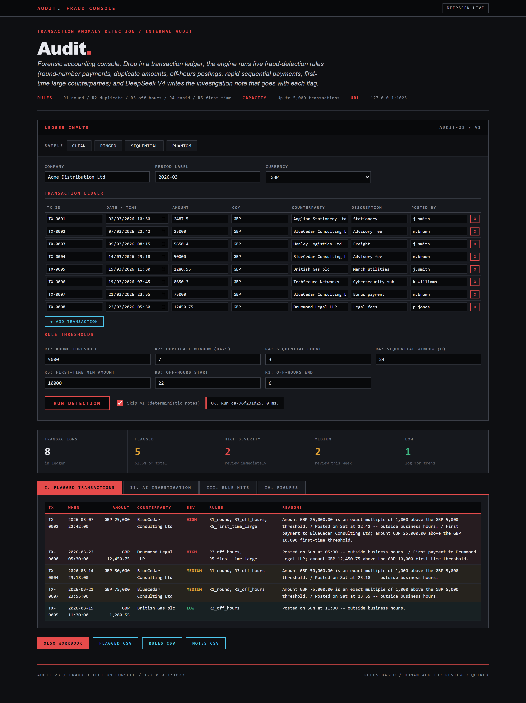
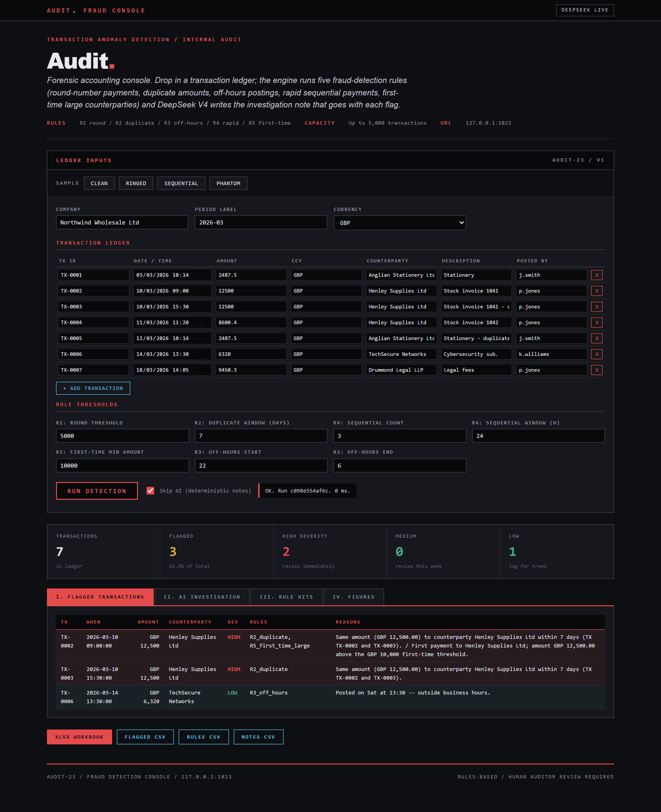
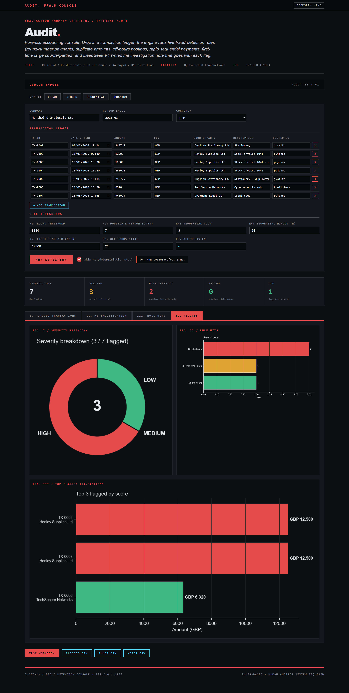

DAY 23 OF 30
Audit.
Five-rule fraud detection console
About the project
Forensic transaction monitor: round-numbers, duplicates, off-hours, rapid-sequential, first-time. AI writes the investigation note per flag.
Local Flask app + CLI that runs five anomaly-detection rules over a transaction ledger (round-number payments, duplicate amounts, off-hours timestamps, rapid sequential payments, first-time large counterparties) and asks DeepSeek V4 to write the investigation note that goes with each flag.
At a glance
- Use case
- Forensic accounting, internal audit, transaction anomaly review
- Inputs
- Transaction ledger (TX id, datetime, amount, counterparty, description, posted_by) + rule thresholds
- Outputs
- Per-TX severity + rule hits + 3 charts + Excel workbook + 3 CSVs
- Model
- Single DeepSeek call covering all flagged TXs (~$0.0003 per run)
How it works
- Fraud schema. fraud_schema.py wraps the inputs in a FraudInput dataclass with Transaction sub-records.
- Five-rule engine. fraud_engine.run_rules applies the five rules independently and then aggregates.
- AI investigation. fraud_ai.notes builds a digest of every flagged transaction and the rule hits per TX.
- Forensic-console UI. Distinct from every prior day's palette.
- Excel + CSV exports. openpyxl writes the multi-sheet workbook (Summary with embedded charts, Flagged transactions table with severity fill, Rule hits sheet, Investigation notes, Inputs).
AI integration
DeepSeek writes investigation notes
Limitations
- Rules-based, not ML. The five rules are explainable.
- Up to 5,000 transactions per run. Single-period reviews.
- No counterparty enrichment. The rules look at the local ledger only.
- Human auditor review required. Every flag needs a human investigator.
- No automated remediation. The engine surfaces; it does not freeze.
- Single currency per run. Cross-currency anomaly detection is post-30.
Fun facts
- Five forensic rules (round numbers, duplicates, off-hours, rapid-fire, and first-time payees) sweep a ledger for anything that smells off.
- Each flag arrives with a ready-drafted investigation note.
Walk-through
- Home page (cold start) - Forensic-console aesthetic. Dark ink canvas, cyan accents, red / amber / green severity colouring.
- First data run: ring of round-number payments - Ringed sample. Coordinated round-number payments around a threshold.
- Second data run: rapid sequential payments - Sequential sample. Several payments to the same counterparty within a tight time window.
- Figures tab (what the Excel export embeds) - Three charts on a dark background: severity breakdown (donut), rule hit counts (bar), and the top flagged transactions...
- AI investigation tab (the integration) - DeepSeek V4 reads the structured digest of every flagged transaction and writes the investigation note per TX.
Screenshots




PORTFOLIO. / DAY 23
SAFWAN / SELECTED WORK